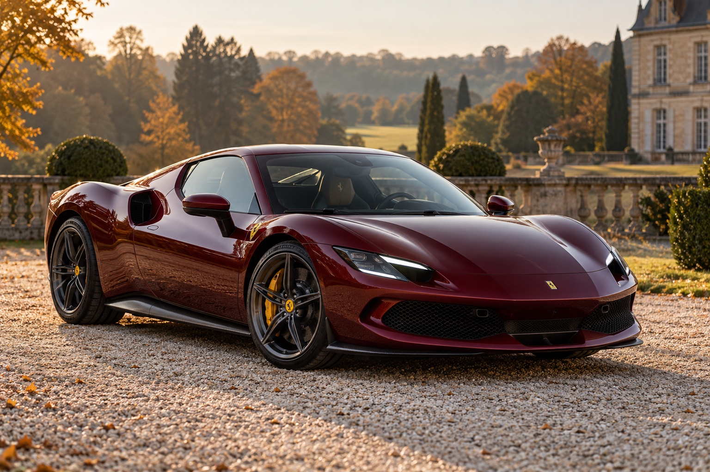
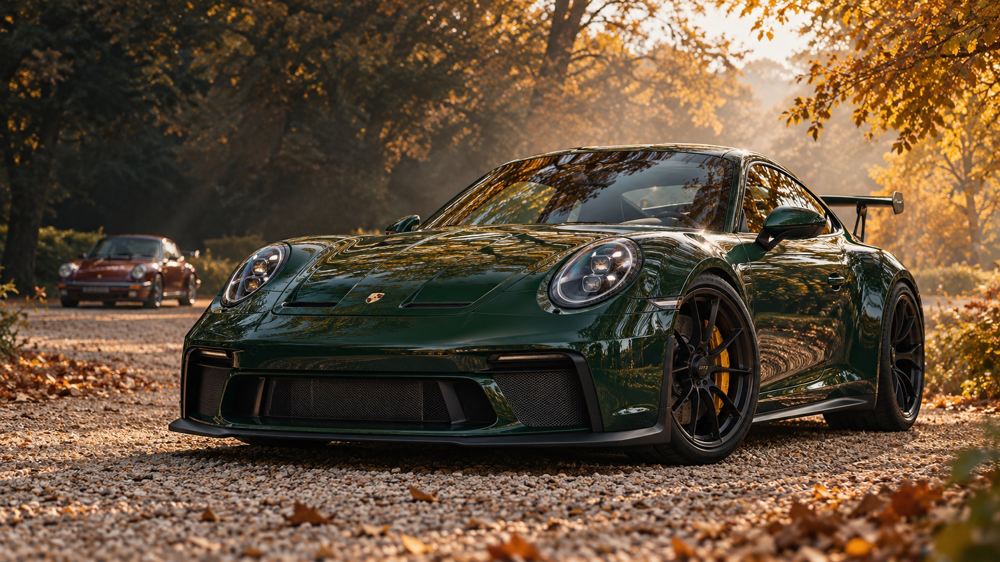
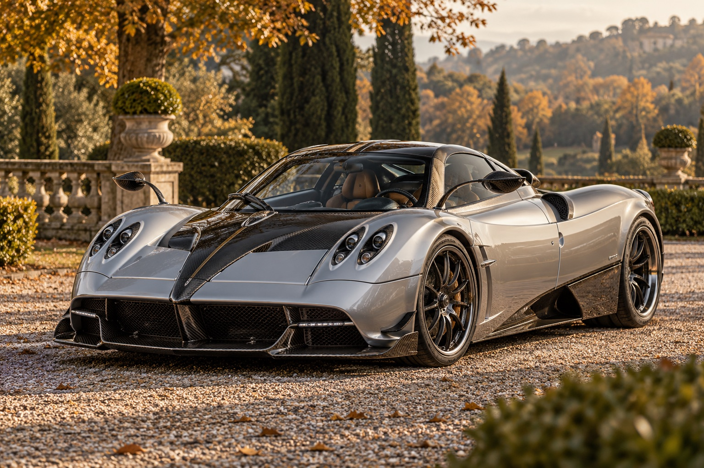
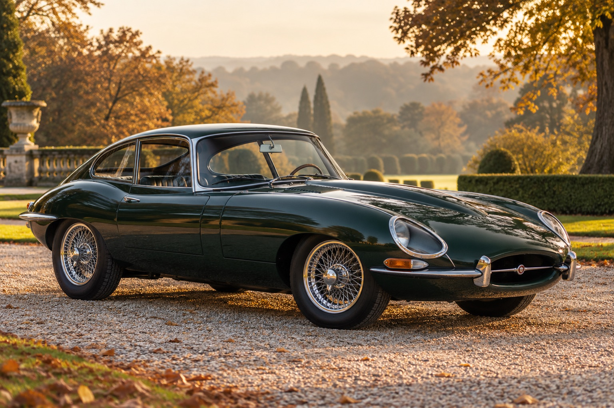
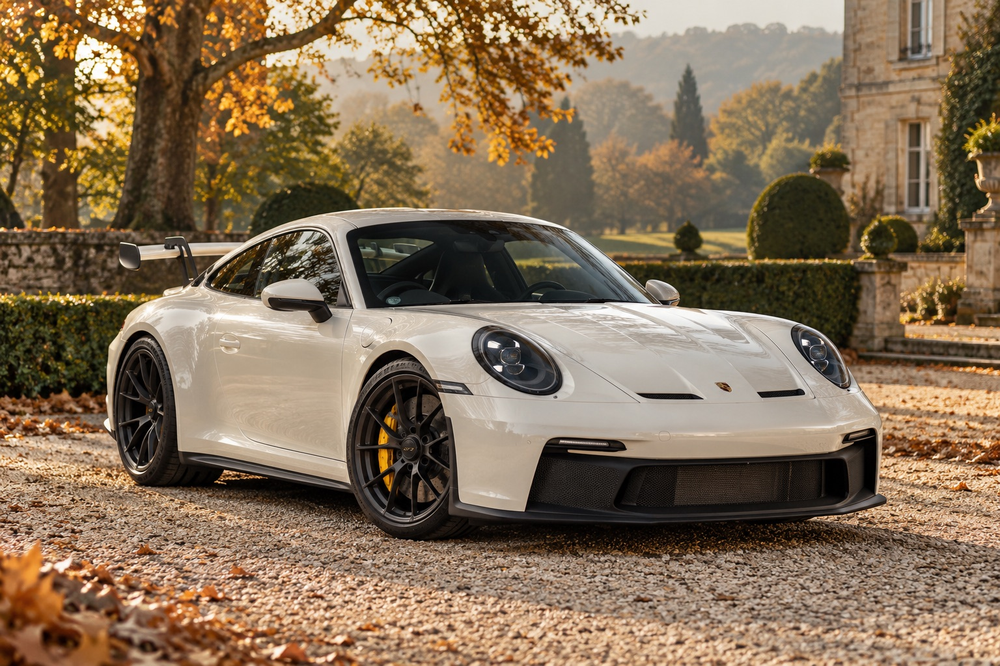
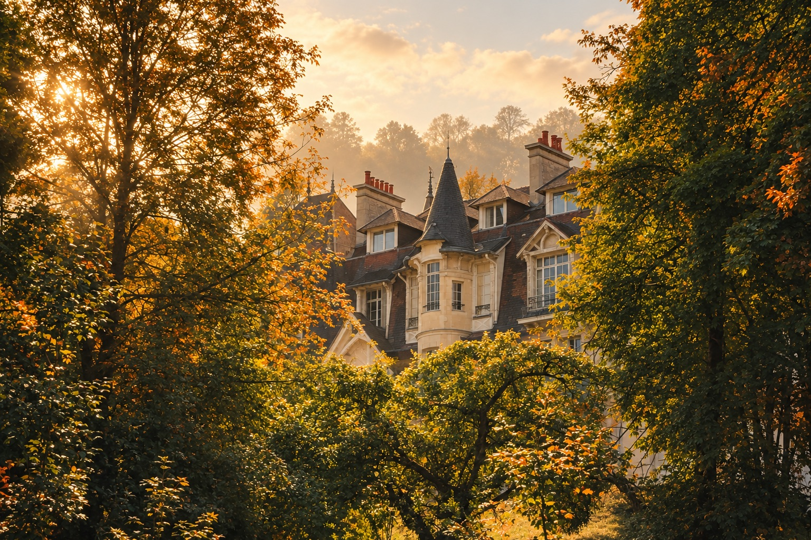
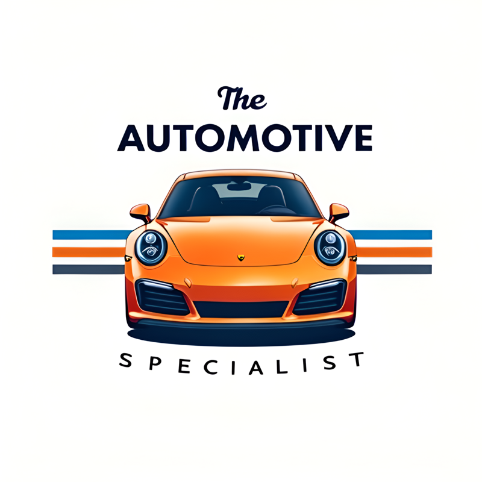

01 / PERFORMANCESUPERCARS
↗Des modèles contemporains où performance, technologie et design se rencontrent.

LE RENDEZ-VOUS AUTOMOBILE DU DIMANCHE MATIN
Une matinée dédiée aux belles automobiles.
Un lieu d’exception. Une passion commune.
DIM. 08 NOVEMBRE 2026 / 09:00 — 12:00
CHÂTEAU DE PRUNAY · LOUVECIENNES
/ 01 — L’ÉVÉNEMENT /
VOITURES ET CAFÉ · PREMIÈRE ÉDITIONCafé & pains au chocolat
offerts à tous les participants.
Un rendez-vous privé dans un cadre d’exception, imaginé pour réunir propriétaires, collectionneurs et passionnés autour d’un café.
Dans l’atmosphère élégante et intimiste du Château de Prunay, découvrez des voitures d’exception, partagez votre passion et profitez d’un moment convivial, loin des grands rassemblements traditionnels.
DE RENCONTRE
LIEU D’EXCEPTION
BEST OF SHOW
PASSION AUTOMOBILE
/ 02 — POUR QUI ? /
QUATRE UNIVERS. UNE MÊME PASSION.L’événement accueille les propriétaires et passionnés de supercars, hypercars, voitures de collection et sportives.

01 / PERFORMANCEDes modèles contemporains où performance, technologie et design se rencontrent.

02 / RARETÉDes automobiles rares et exceptionnelles représentant le plus haut niveau de performance.

03 / HÉRITAGEDes modèles historiques, iconiques ou rares, sélectionnés pour leur caractère et leur histoire.

04 / ÉMOTIONDes automobiles conçues pour le plaisir de conduire et la performance.
Chaque inscription est examinée afin de préserver la qualité,
la diversité et l’esprit de l’événement.
/ 03 — UNE MATINÉE AU CHÂTEAU /
Le temps d’une matinée, le Château de Prunay devient un lieu de rencontre entre passionnés d’automobile.
09:00 — 12:00Découvrez une sélection de supercars, sportives et véhicules de collection, réunis dans un cadre d’exception.
Échangez avec d’autres propriétaires dans une atmosphère privée et détendue. Derrière chaque automobile, une histoire à partager.
Certains spécialistes présenteront leurs véhicules, leurs services et leur savoir-faire.
Une sélection de voitures pourra également être proposée à la vente pendant l’événement.
Café et pains au chocolat seront offerts tout au long de la matinée. Prenez le temps de profiter de l’instant.
/ LA SÉLECTION VOITURES ET CAFÉ /
À l’occasion de cette édition, nous pourrons sélectionner les 5 automobiles les plus remarquables de la matinée : design, rareté, histoire, état et personnalité.
Les voitures sélectionnées seront mises en avant sur nos réseaux sociaux et dans le contenu officiel Voitures et Café.
/ 04 — LE LIEU /
LOUVECIENNES, FRANCEAu cœur de Louveciennes, le Château de Prunay offre une atmosphère élégante et confidentielle, idéale pour réunir automobiles d’exception et passionnés.

L’événement est organisé sur une propriété privée. Le nombre de véhicules pourra être limité afin de préserver le confort des participants et le caractère exclusif de la rencontre.
/ 05 — PROFESSIONNELS /
Professionnels de l’automobile, partageons le même univers.
Voitures et Café accueille un nombre limité de professionnels sélectionnés : vente automobile, detailing, entretien, restauration, assurance, transport spécialisé ou services haut de gamme.
Présentez vos véhicules et votre savoir-faire dans un cadre naturel et convivial. Indiquez simplement votre activité lors de votre inscription.
PARTICIPER EN TANT QUE PROFESSIONNEL ↗/ L’ESPRIT VOITURES ET CAFÉ /
Merci de respecter la propriété, le voisinage, les véhicules exposés
et les autres participants.
Nous souhaitons faire de Voitures et Café un rendez-vous régulier si cette première édition rencontre le succès attendu.
/ 06 — LES ORGANISATEURS /

Automobile · Expertise · Passion
VOIR INSTAGRAM ↗
Supercars · Automotive Culture · Exclusive Cars
VOIR FACEBOOK ↗/ 07 — INSCRIPTION /
Vous souhaitez participer à Voitures et Café au Château de Prunay ? Bien entendu, cet événement est gratuit mais limité en terme de places disponibles. Présentez-vous et votre automobile.
Votre demande sera examinée par notre équipe. Vous recevrez une confirmation par e-mail ou téléphone.
CHÂTEAU DE PRUNAY
09:00 — 12:00
/ RESTONS EN CONTACT /
Véhicules acceptés, participation professionnelle
ou informations sur l’événement : parlons-en.